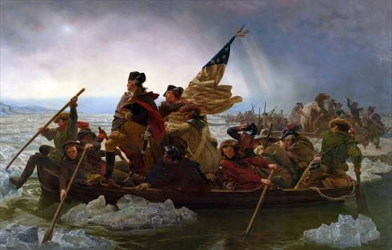

On June 15th, 1775, the Second Continental Congress was held following the Battle of Lexington and Concord. During the meeting George Washington was unanimously voted in as commander-in-chief of the newly formed Continental Army. Despite Washington's qualifications, the new army had an outstanding issue of disparity when compared to their British counterparts. They had far less training, experience, and overall supply. This issue would remain on the forefront for a significant part of the war.
The first major battle of the war was the Battle of Bunker Hill in 1775, and Washington was not present. Despite the battle being a loss for the Americans, it came at a heavy price to the British and proved that the war would not be a simple victory for the British. The first major battle with Washington present was the Battle of Long Island. The battle saw a British army that was stronger in almost every way attacking the American army led by Washington. Like most had likely expected, the battle was a disaster for the Americans, and they were forced to retreat while the British gained control of New York City. Luckily for the Americans, Washington led a nighttime escape and saved a large portion of the army. The battle was followed by a string of defeats for the Americans which led not only to many deaths, but to an all-time low in morale. Many likely saw the "writing on the wall" and foresaw an imminent defeat of the Americans. Time was running out for Washington and if he wanted to turn the tide of the war, he would have to act fast, or risk losing the faith of his men.
On the late night of December 25th, Washington led thousands of soldiers across the Delaware in a surprise attack against the Hessian garrison at Trenton. Despite the time of year and weather conditions, Washington and his men pulled off an impressive victory that helped to restore American morale and prove to the British that they would not go down without a fight. The battle was the first major victory of the war for the Americans, and more importantly it came after many having lost faith from the long series of lost battles. If Washington and his men had failed that night it is hard to say what the outcome of the war might have been. Despite Washington's victory, followed by several others, the war was not yet won for the Americans and disaster was never far away. From December 1777, to June of 1778, Washington's army would encamp in Valley Forge. This period of time is noted for its hardships for the Americans that would ultimately test the bonds that held them together. This was caused by several factors including the cold, hunger, and general suffering. Despite the hardships, Valley Forge served as a testament to Washington's leadership skills as he kept the army together.
In 1778, France officially entered the war on the side of the Americans followed by other nations in later years including Spain and the Netherlands. While none of these nations alone would win the war for the side of the Americans, they did provide valuable support and distractions, saving the Americans from having to face the full might of the British Empire. Washington still had a war to fight, and his new found allies were not going to win it for him. From 1778 to 1783, several key battles were won by Washington that would finally lead to the Treaty of Paris in 1783, where Britain would officially give up the war and recognize American independence. After the treaty, Washington would officially retire from his role as commander-in-chief and return to civilian life.
